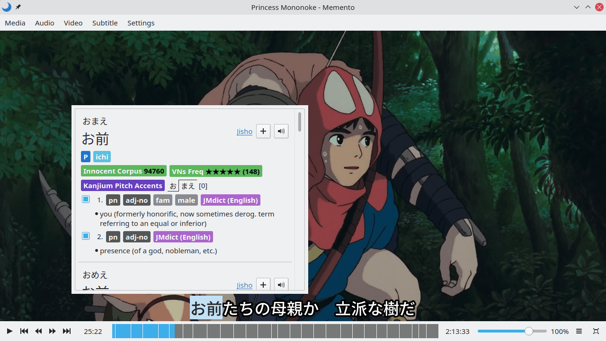

Memento
A FOSS, mpv-based video player for studying Japanese
Get Noto Sans JP and Kanji Stroke Order fonts for the best experience

Overview
Memento is a free and open source, mpv-based video player that makes studying Japanese easier with a built in popup dictionary, Anki integration, and more.
Yomichan Dictionaries
Memento uses Yomichan's dictionary format and supports all the same dictionaries.
Anki Integration
Automates Anki card creation through AnkiConnect.
Grammar Aware Search
Matches terms in subtitles regardless of most inflections.
Scripting
Supports mpv plugins, upscalers, and shaders.
Configurable
Supports mpv configuration files such as input.conf for rebinding keys and mpv.conf for configuring mpv.
Streaming
Supports streaming from many websites through youtube-dl.
© 2021 Ripose